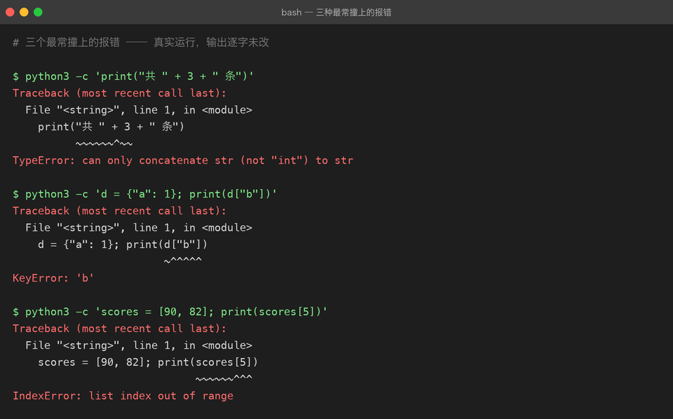

练手方法：怎么练才不是「抄代码」
这份文档和具体某个项目无关，但比任何一个项目都重要。 上级目录：练手项目总览
一个残酷的观察
看完一段代码觉得「懂了」，和合上电脑自己写出来，中间隔着一整个太平洋。
看懂了只是「识别」——大脑在比对模式，很轻松。写出来需要「生成」——从空白处造出结构，很累。而编程能力只长在后者身上。
所以本目录里每个项目的 README 都不是可以顺着敲下来的教程。它们的结构是：
你要做的东西 → 先看结果（真实截图） → 你要学到的知识点 → 怎么跑 → 关键代码拆解 → 常见坑 → 验收标准 → 进阶挑战「关键代码拆解」和「常见坑」是卡住之后再看的，不是一开始就照着抄的。
三遍法
同一个练习做三遍，每次的目的完全不同：
| 遍数 | 做法 | 目的 |
|---|---|---|
| 第一遍 | 照着要求写，允许看参考实现。目标是跑起来 | 建立「这东西长什么样」的手感 |
| 第二遍 | 隔两三天，关掉参考实现，从空文件开始重写 | 把「认得」变成「写得出来」 |
| 第三遍 | 自己改需求（见每个项目的「进阶挑战」） | 证明你理解了结构，而不是记住了字符 |
只有第三遍才算真的练了。 前两遍是必要成本，但不是成果。
如果你时间有限，宁可把一个项目做三遍，也不要把六个项目各做一遍。
卡住的时候怎么办
先看一张图——这是真实跑出来的三条报错，逐字未改：

先别读细节，只看关键：这三条的最后一行，都已经把「什么错」说清楚了。
TypeError: can only concatenate str (not "int") to str→ 你把字符串和数字相加了KeyError: 'b'→ 字典里没有'b'这个键IndexError: list index out of range→ 列表只有 2 个元素，你取了第 6 个
按这个顺序试，不要直接跳到第 5 步：
- 读完整条报错，从最后一行往回读。Python 的 traceback 最后一行是「什么错」，倒数第二组是「在哪一行」。
- 看类型。
TypeError: 'NoneType' object is not subscriptable意思是「你以为是个 dict，其实是 None」——问题在更早的地方，不在报错那一行。 - 二分定位。在中间插一句
print(type(x), x)，把范围砍一半。 - 写最小复现。新建一个 10 行的文件，只保留出问题的那段逻辑。十有八九在这一步你就发现问题了——这是最高效的一招。
- 实在不行再看参考实现。看的时候只找出问题的那一段，别顺手把整个文件读完。
反直觉但真实：调试花的时间不是浪费，是主要收获。 顺着教程敲一遍什么都不会发生，只有卡住又爬出来才会留下东西。
怎么算「练会了」
三道自检题，都要能回答「是」：
- [ ] 不看代码，能在 10 分钟内重写出核心逻辑（不用逐字一致，能跑通即可）
- [ ] 能跟别人讲清楚为什么这么写——比如「为什么 SQL 要用
?占位符」「为什么 404 要自己抛」 - [ ] 能改动需求：给它加一个原本没有的小功能，而不破坏现有结构
只要有一项是否，就还没到「练会」的程度。这时候不要急着进入下一个项目。
用 Git 记录你的练习
每个项目建议这么开：
cd python-practice
git checkout -b practice/01-todo-cli # 自己的练习分支
# 在这里写你自己的版本，不要动参考实现
git add . && git commit -m "feat(01): 我的待办清单 v1"好处有两个：一是能看到自己第二遍、第三遍的差异（比任何笔记都直观）；二是万一改坏了，git checkout . 就回到上一个能跑的版本。
本仓库的参考实现都在
main分支上。你在自己的分支上练习，跑不动了随时git checkout main -- python-practice/01-todo-cli拿回参考版对照。
每个练习至少写一个测试
哪怕只有三行：
def test_add_then_list():
store = Store(Path(":memory:")) # 或者用 tmp_path
store.add("买牛奶")
assert len(store.items) == 1理由不是「工程规范」，而是测试是你唯一能自动验证「我没改坏」的手段。没有测试的话，你每次改代码都得手动把整个流程点一遍——很快就会烦到不点了，然后某天发现三个功能全坏了。
01-todo-cli 的进阶挑战 1 和 04-fastapi-blog 的 test_api.py 就是两个层次的范例。
关于「问 AI」
这个时代最大的陷阱是：让 AI 把代码写好，你只是复制粘贴。那样你会得到能跑的项目，和零增长的能力。
几种问法，效果差别巨大：
| 问法 | 效果 |
|---|---|
| ❌「帮我写一个待办清单」 | 得到代码，失去练习 |
⚠️「这段代码为什么报 KeyError」 | 学到知识点，但容易变成「AI 帮我修」 |
| ✅「我自己写完了，帮我挑出设计上的问题」 | 高质量反馈 + 自己动手 |
| ✅「我想用 BFS 爬取，但不确定队列怎么去重，我的做法是……对吗」 | 带着方案去验证 |
先自己写出一版（哪怕很烂），再让 AI 挑问题。 这一条能挡住 90% 的「学习幻觉」。
六个项目的推荐顺序
严格按难度递增走，不要跳：
01 命令行待办清单 ●○○ 1 个周末 变量/列表/字典/文件/命令行
02 Excel 报表自动化 ●●○ 2–3 天 pandas/清洗/聚合/Excel/绘图
03 网站内容爬虫 ●●○ 2–3 天 请求/解析/翻页/重试/异常
04 FastAPI 博客 API ●●○ 1 周 路由/校验/状态码/依赖注入/测试
05 AI 命令助手 ●●● 1–2 周 调用 LLM API/多轮/流式
06 RAG 知识库问答 ●●● 2–3 周 切块/向量化/检索/生成/评测01–04 在本目录里可以直接跑；05、06 的完整实现已经在本仓库的 projects/ 层，本目录只给指路和自测路线。
01 和 02 之间有一条隐形的分界线：01 只用标准库，02 开始引入第三方库。跨过这条线之后，「读官方文档」会变成你最主要的学习方式——所以 01 刻意让你先把 Python 本身吃透。